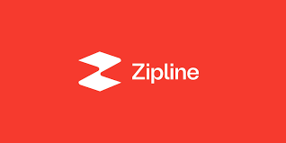

Internship
I have accepted a role as a Battery Manufacturing Engineering intern at the most prominent sustainability company in the world. In this role I will be:
- Leading battery manufacturing line concept & build activities including generating line layouts, equipment specifications, business case generation, design reviews, tool install & commissioning efforts.
- Leading mechanical design concept generation, tooling procurement / build and installation activities to improve existing battery manufacturing lines.
- Executing product design changes impacting battery manufacturing lines
Role
Battery Manufacturing Engineer
Location
San Francisco Bay Area
Tools
TBD

UAV Project
Personal Project I am owning to develop a strong understanding of UAV physics applicable to Zipline's fleet drones.
- Performing calculations to direct intial mechanical design decisions.
- Designing fuselage and simulated body using CFD within SolidWorks, verfiying aerodynamic performance.
- Creating wiring schematic to decribe system wiring to achieve functionality.
Role
Mechanical Design Engineer
Location
San Francisco Bay Area
Tools
SolidWorks, KiCad Microsoft Tools